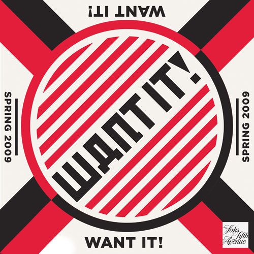
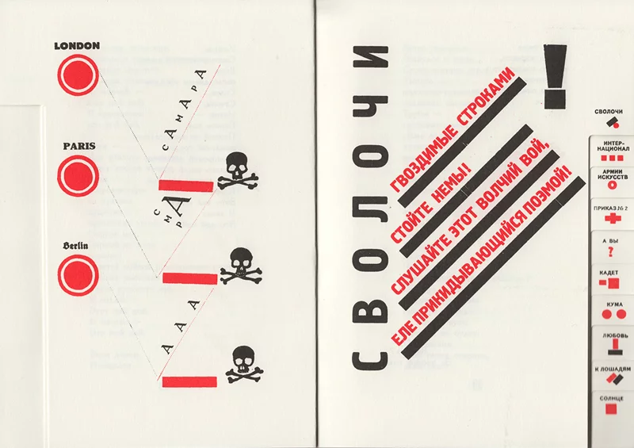

Project 1: Manuscript
Knowing Your Design History is Crucial to Aesthetic Innovation
- Style repeatedly drifts in and out of high and low culture like an undertow
- When design and context are inextricably linked, it is good. When design detaches from its context, we are left with cliches, embarrassments…deaths.
- Reminder for designers and design students today: if you borrow from a certain style, it’s important to know where that style came from, as well as the social and cultural contexts that gave that style its rise.
- We all know that style goes from high to low and high again, but identifying a style’s context breeds visual literacy and shepherds innovation.
- 2009 Want It campaign for Saks designed by Shepard Fairey’s Studio Number One

- This uncanny impersonation of Constructivism recycles more than just a visual language
- In the late 1910s and early 1920s, Constructivism grew out of a Soviet State sponsored movement designed to disseminate political doctrine. Collectivism, universality, practicality, industry, and purity evoked the new Soviet utopia, yielding a simplified red, black, and white Communist palette.

- Constructivism featured intoxicating thick red and black stripes, primary shapes, and images that comprised a universal language engaging an illiterate peasant population.
- Type was meant to be seen and heard. The dynamically composed forms conjure a vision of the new world, “constructed” through a new visual architecture.
- This style tip-toed around subsequent cliche, embarrassment, death, etc. yet over the decades, the style was still fetishized and revived.
- Studio Number One’s advertising campaign for the luxury department store copied it verbatim. English language messages were written in geometric, Cyrillic-inspired letterforms to connote Russian typography. The campaign’s black and white photography mimics that of Alexander Rodchenko’s photos of spirited Communist youths gazing toward an idealized future.

- At first glance, seeing a high-end retailer like Saks appropriate the Constructivist methodology to sell high fashion to their beau monde clientele was a complete assault on the original Soviet mission—it felt completely out of context.
- Yet upon closer examination, Want It theoretically stoked the 2008 recession-era economy.
- Studio Number One hijacked the Constructivist ethos to fire up a patriotic faith through unmitigated stylistic quotation.
- Despite the nearly hundred years separating the Constructivist and Studio Number One campaigns, a repeat performance of art and politics converge, the context presented itself once again.
- it has been done, and it will be done again.
- Knowing your history nourishes originality and edifies creative disruption—a prerequisite for our contemporary postmodern, hyper-exposed and hyper-accessed context.
The burden remains on us to translate the past to be good innovators.